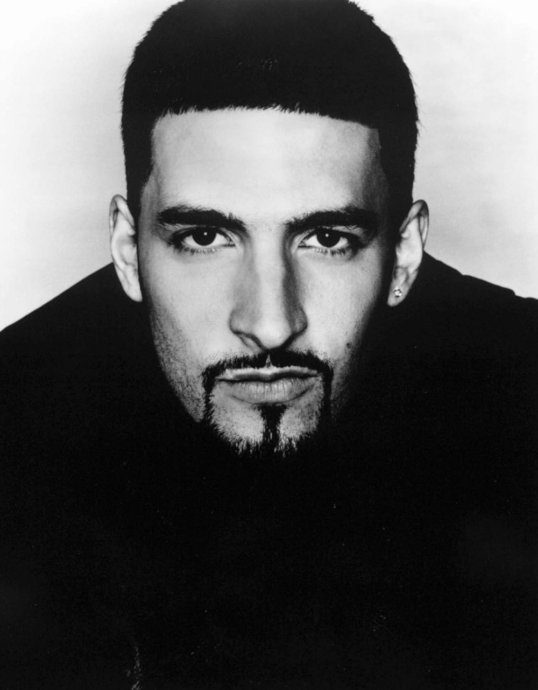
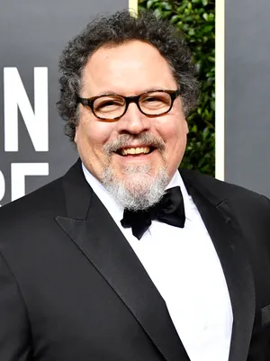
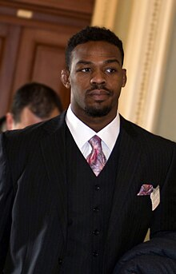
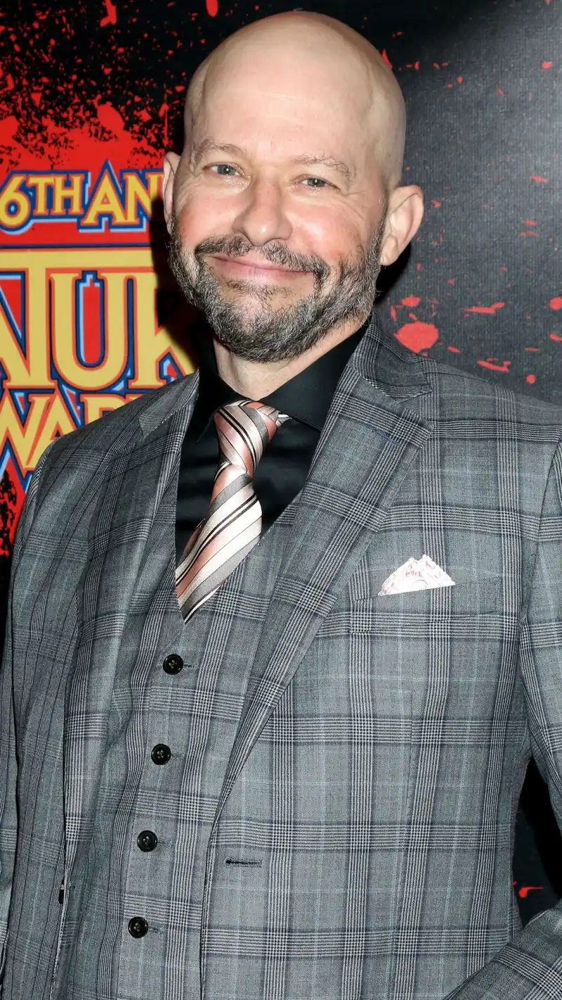

Current Age: 50 years old
Jon.B
Date of Birth: November 11, 1974
Place of Birth: Providence, Rhode Island, U.S.
Current Age: 50 years old
Profession: R&B Singer, Songwriter, Record Producer
Fun Facts:
Jon B. comes from a musical family; his father, David, was a professor of music, and his mother, Linda, was a concert pianist.
His debut album, Bonafide (1995), featured hit singles like "Pretty Girl" and "Someone to Love" (featuring Babyface), the latter earning a Grammy nomination for Best Pop Collaboration with Vocals.
In 2023, Jon B. announced a collaboration with Tank for a new R&B track titled "Waiting On You."
Jon Arbuckle
First shown: July 28, 1950
Place of Birth: Muncie, Indiana, U.S.
Current Age: Unknown
Profession: Cartoonist
Fun Facts:
Jon Arbuckle is the fictional owner of Garfield, the famous comic strip cat created by Jim Davis.
In the Garfield series, Jon is portrayed as a well-meaning but often clueless character, frequently attempting to date without much success.
His character has been adapted into various media, including animated television specials and feature films.

Jon Clardy
Date of Birth: May 16, 1943
Place of Birth: Washington, D.C., USA
Current Age: 81 years old
Profession: Professor of Biological Chemistry and Molecular Pharmacology
Fun Fact:
Professor Clardy has a cat named Ember, who is often mentioned as his "favorite cat."
Jon (EddsWorld)
Date of Birth: Unknown
Place of Birth: England
Current Age: 20s
Profession: Unknown
Fun Facts:
Jon is a side character in the animated web series Eddsworld, created by Edd Gould.
In the series, Jon is known forbeing the punching bag for his roomate Edwardo.
The man who voices Jon was "Eddy Bowley"

Jon Favreau
Full Name: Jonathan Kolia Favreau
Date of Birth: October 19, 1966
Place of Birth: Flushing, Queens, New York City, USA
Age: 58 years old (as of 2025)
Profession: Actor, director, producer, and screenwriter
Fun Facts:
Jon Favreau is known for directing and producing Iron Man (2008), which kicked off the Marvel Cinematic Universe (MCU).
He also voiced the character of "Happy Hogan" in many MCU films.
He directed the live-action remake of The Jungle Book (2016) and The Lion King (2019).
Favreau's The Mandalorian series on Disney+ was a huge success, helping to shape the future of Star Wars TV content.
Jon Gaines II
Date of Birth: January 17, 1998
Place of Birth: Northville, Michigan, USA
Age: 27 years old (as of 2025)
Profession: Professional football player (offensive lineman)
Fun Facts:
Jon Gaines II plays as an offensive lineman in the NFL. He played college football at UCLA.
He was selected in the NFL draft by the Arizona Cardinals in 2023.
Gaines was known for his versatility and strength, able to play multiple positions on the offensive line.

Jon Jones
Date of Birth: July 19, 1987
Place of Birth: Rochester, New York, USA
Age: 37 years old (as of 2025)
Profession: Professional mixed martial artist
Fun Facts:
Jon Jones is widely regarded as one of the greatest mixed martial artists (MMA) of all time.
He became the youngest UFC champion in history at 23 years old.
Jones has had a controversial career with multiple legal issues but has remained dominant in the octagon, known for his unique fighting style and versatility.

Jon Batiste
Date of Birth: November 11, 1986
Place of Birth: Metairie, Louisiana, USA
Age: 38 years old (as of 2025)
Profession: Musician, bandleader, composer
Fun Facts:
Jon Batiste is the bandleader for The Late Show with Stephen Colbert.
He won an Oscar for Best Original Score for his work on the Pixar film Soul (2020).
He has been recognized for blending jazz with various genres, including R&B, pop, and classical.
Batiste was awarded multiple Grammy Awards, including Best Album of the Year for his album We Are in 2022.
